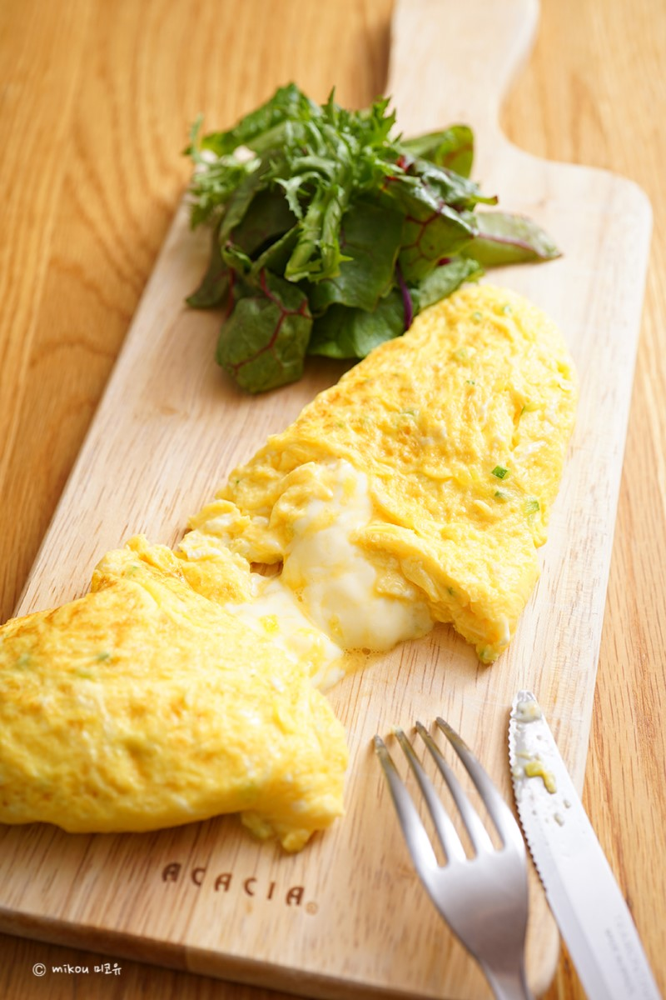

West Food Menu
치즈 오믈렛

재료 : 달걀 3개, 치즈 1장, 식용유 2ts, 생크림 20g, 버터 30g, 소금 2g
①계란 3개를 깨서 소금을 넣고 잘 섞어서 계란물을 넣어줍니다.(계란물을 체에 한 번 걸러주면 좀 더 보드러운 오믈렛을 만들 수 있어요!)
②팬에 기름 or 버터를 충분히 두르고 센 불로 충분히 예열해줍니다.
③예열된 팬에 계란물을 넣어준 뒤 바로 불을 약하게 줄여줍니다..
④젓가락을 이용해서 충분히 저어주면서 스크램블을 해줘야 합니다.
⑤바닥이 보일 정도로 스크램블을 해준 뒤 계란을 안쪽으로 조심스레 잘 접어줍니다.
⑥1/3정도 접었다면 치즈를 넣어주고, 팬을 기울여 계란을 팬 가장자리 쪽으로 보내준 뒤 모양을 잡아줍니다.
⑦계란을 접고, 기다리고, 접고, 기다리고 반복하면서 모양을 잡아주다가 뒤집어서 반대쪽도 익혀주면 완성한다. (기호에따라 케찹을 뿌려도 좋다)
Mascot

Social Network Service